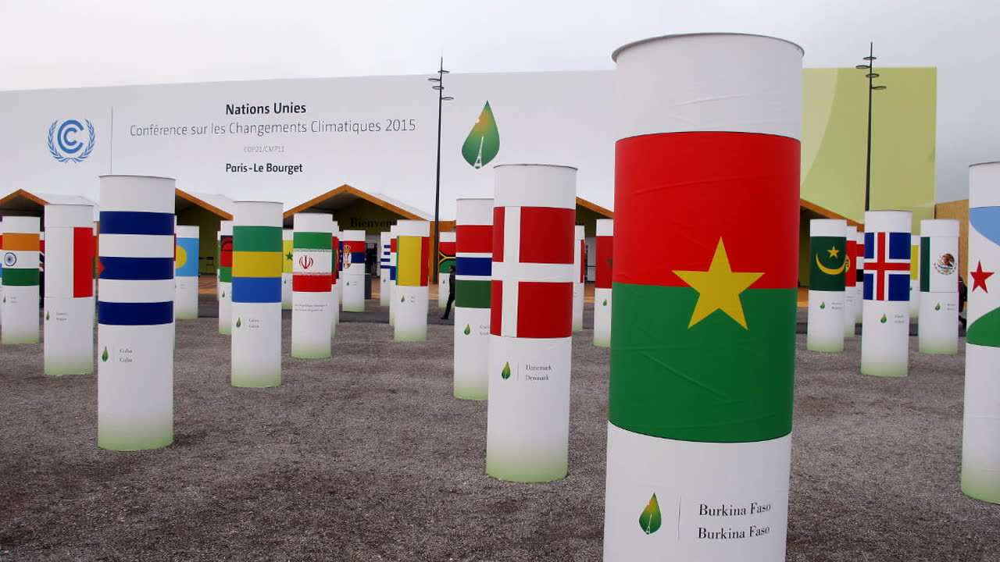

Panneau « À venir au pavillon » de l'accueil, pendant un direct. Aujourd'hui, le marque-page de l'activité en cours reste blanc et ne montre que « MARDI 10 » : l'heure y est écrite en blanc sur blanc. Trois façons de le remplir, sur la photo (grand écran) et sur téléphone.
Le marque-page passe au rouge et dit « DIRECT » à la place de l'heure prévue, comme le bandeau d'en haut (« en cours depuis »). Une jauge se remplit jusqu'à la fin prévue.

Téléphone, 375 px
Le marque-page devient rouge comme prévu par la maquette du 02/11 : l'heure de début en blanc, et « jusqu'à 19:00 » à la place du jour. L'étiquette « En direct » reste sous le titre.
Téléphone, 375 px
À la place du marque-page, une photo tenue par le même ruban : l'image de l'activité voilée, le bouton de lecture rouge, « Direct » écrit dessous.
Téléphone, 375 px
A, B ou C. La correction du défaut (papier rouge) vient avec chacune.